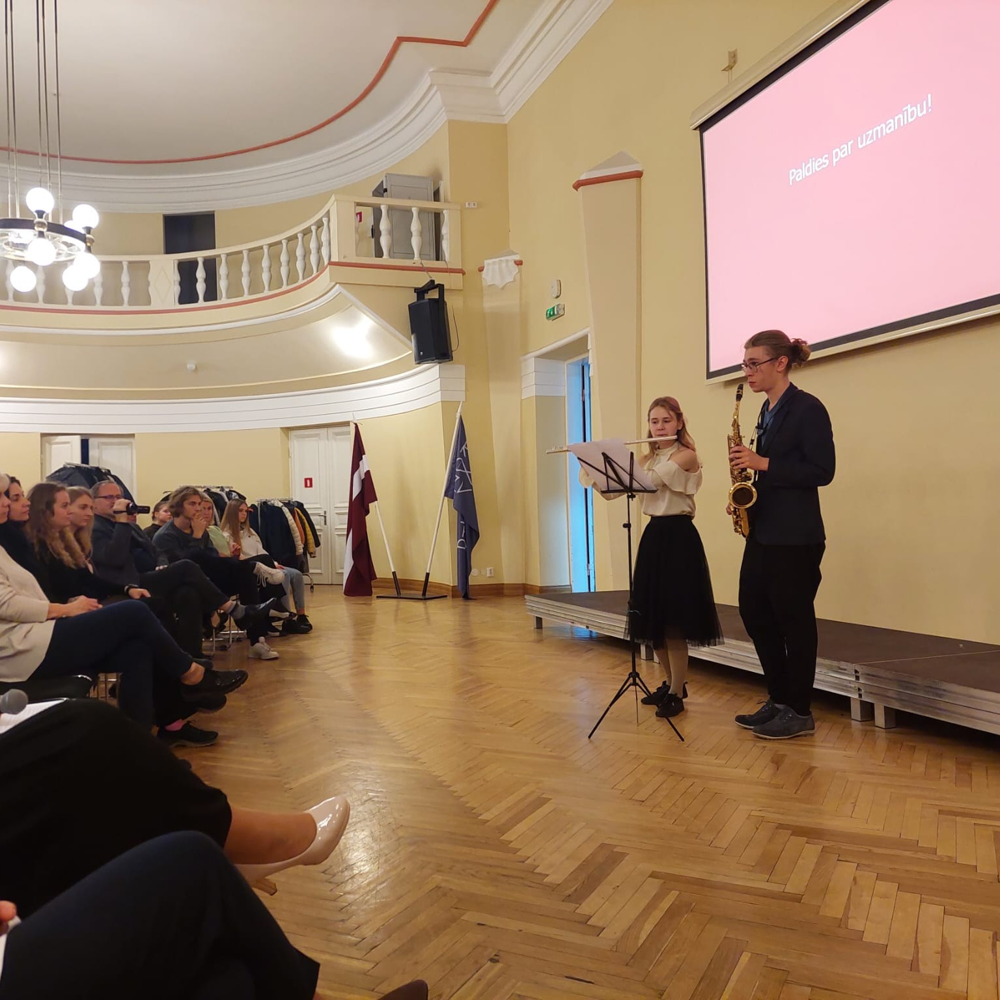

| EDUCATION | ||
|---|---|---|
|  | 2012 - 2022 | Studied at Dobele Music School |
| 2019 | Received a diploma, but continued attending flute lessons for 3 additional years | |
| 2018 | Attended the masterclass of the professional Lithuanian flutist Vytenis Gurstis | |
| PARTICIPATION | ||
| 2013 - present | Four different choirs: Skanītis, Varavīksne, Dzirkstele, Izvēle | |
| 2014 - 2019 | Dobele Music School Wind Orchestra | |
| 2014 - 2016 | Flute Duo | |
| 2015 - 2016 | Dobele Music School Girls' Vocal Ensemble | |
| 2016 - 2019 | Flute Trio | |
| 2019 - 2021 | The Wind Orchestra "Dobele" | |
| 2022 - present | Self-established ensemble with Danija Svalba (piano) | |
| PROJECTS | ||
| 2019 | Participated in the Season Closing Concert of the Jāzeps Vītols Latvian Academy of Music Symphonic Orchestra | |
| 2020 | Collaborated with a professional dancer in making a music video | |
| 2021 | Recorded a Christmas song video with a choir "Sadziedis" | |
| 2023 | Sang at the Latvian Song and Dance Festival | |
| AWARDS | ||
| 2018 | 3rd place in the Competition for Small Town and Rural Music Schools’ Flutists | |
| 2018 | The Favorite Award at the Baltic States Chamber Ensemble Festival "Silver Flutes" | |
| 2019 | 2nd place in the Second Round of the National Competition in Wind Instrument Performance | |
| 2019 | 3rd place in the Latvian Young Flutists' Competition "Silver Flute" | |
| 2021 | 2nd place in the Competition for Small Town and Rural Music Schools’ Flutists | |
| 2021 | 3rd place in the Latvian Music School Wind and Percussion Instrument Performers' Competition | |
| 2022 | 1st place in the Competition "Talent for Latvia" |